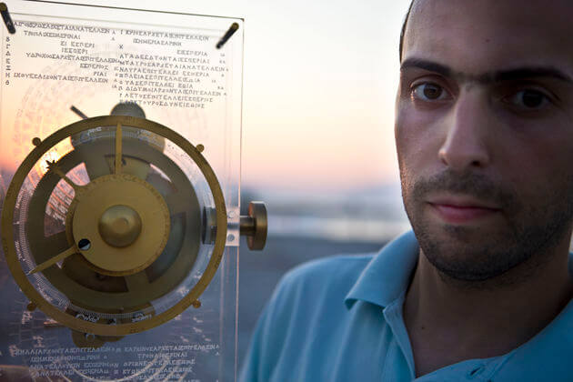
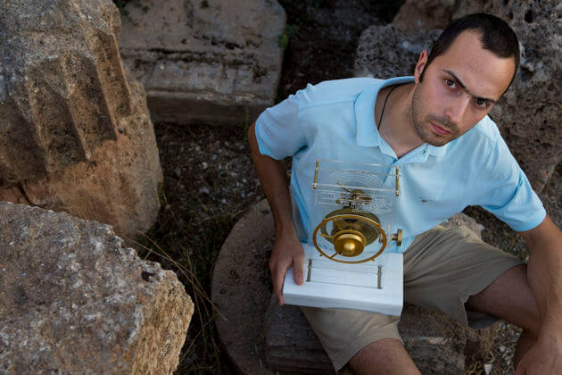

Revival from Greek hands
Interview to Vassilis Mathioudakis of “efsyn”, 5-6.09.2015

Physicist Markos Skoulatos | photo: Vassilis Mathioudakis
A well kept secret, in underwater silence. Hiding for 2000 years in the Greek archipelago, rusting away. Discovered with the birth of x-rays. Waiting for 100 more years to be decoded by 3D tomography. Today, we can just about recreate it: the Antikythera Mechanism. A young scientist, with an international career, the physicist Markos Skoulatos from Egio, recreated it and talks to us about it.
» We could say that it is a primordial technological achievement of our civilization. At the same time, it is a masterpiece of pure intelligence that shines in the greek and world stage for two millennia. Humanity has only experienced it in the last 100 years, and fully decoded it just in the last decade.
» It is the discovery that made us rethink everything we know about ancient technical know-how and forces us to rewrite the history of science as taught in universities. It is a mysterious construction, that is a mechanical computer in essence. It is programmed to execute predetermined astronomical calculations. The “operating system” which it uses may well be “programmed” by the manufacturer by changing the position and size of gears and shafts.
» In today’s terminology, we would say, indeed, that is connected with two screens, at the front and back. Briefly, the front screen predicts and shows the natural movement of the celestial bodies. The rear screen provides forecasts for solar and lunar eclipses, and informs for astronomical events that had a significant agricultural or religious interest.
» Finally, the Olympics and other Panhellenic Games were foreseen, giving a social character to the Mechanism. All these functions are explained with tiny inscriptions in various parts of the device, just like the user-manuals one finds nowadays together with the purchase of a gadget!
» The complexity of the Mechanism, as well as its use in relation with the inscriptions, really makes us wonder about the inconceivable intelligence, imagination … about this construction, 2100 years ago.

Markos Skoulatos at the archaeological museum in Egio | photo: Vassilis Mathioudakis
❖ How was the idea of your reconstruction born?
The story began in Berlin when an American colleague, during coffee, mentioned that only thanks to modern imaging techniques, was the decryption of the Antikythera Mechanism possible. I immediately thought that we, as Greeks, have a duty to know more about our cultural heritage. Until then I remembered the mechanism as a dim childhood memory. I read on the internet and then watched the excellent BBC documentary «The 2.000 year old computer». I thought: “How nice would it be if I had before me a reconstruction and rotated the gears with the indicators! But it’s very complex”. Two months later, and after watching the documentary once more, the idea to start took root in me, knowing in parallel that the outcome would be unknown. Besides, this is the beauty: doing something without knowing if it will succeed or not. The charm of the difficult.
❖ What was your goal exactly?
Being a research scientist in physics, I am naturally interested in technology. The personal challenge that I undertook was to construct the most accurate working model of the Antikythera Mechanism, which I completed in 2014 as a personal hobby. I was working weekends and some afternoons for 2 years. My goal was very simple in conception: an exact replica of the Antikythera Mechanism, which respects the actual dimensions and known functions of the original and incorporates all the latest scientific research. Nothing more, nothing less. I therefore included the latest scientific findings on what exactly the mechanism did, as well as the full inscriptions, with absolute fidelity and respect to the original.
❖ Did you meet any difficulties?
I didn’t know where to start from. Several publications on the mechanism were existing, but nothing useful to do a reconstruction, apart from the very basic: the number of teeth per gear. Along the way I found about three successful efforts worldwide and many others that never worked. A sign that the task was difficult, especially for someone who has never attempted anything remotely similar. The other manufacturers were either engineers or large groups of people or experienced in such tasks, all with many years of relevant experience on their back. In specific construction questions I posed, I could not get clear answers. The Mechanism was converted into a kind of secret know-how in 2000.
My only companions: mathematics, geometry and a laptop. It was a one-way for me, then, to make my own calculations and designing from scratch, in this challenging task. I used modern computational methods in order to minimize the frictions across all parts. Perfection of calculations and a final production to within 0.02 mm for all the components (gears, shafts, etc.), led to a mechanism with the drive input on the side, just like the original.
❖ How many individual pieces constitute the Antikythera Mechanism?
It consists of about 100 cooperating parts, with the most basic being 40 gears, 20 axes, and three plates on which all interconnect.
❖ In which museum/exhibition can we see your model?
At present, my reconstruction is situated in the living room of our house.
❖ How many people have seen it, how has it been commented and what feedback did you get?
Usually it is observed by our friends and visitors, who ask what it is. More specialized people have seen it, for example at the famous watchmaking museum «Beyer Clock and Watch Museum» in Zurich. They were delighted and offered to organize a talk / workshop on this. The most reliable comment I received though, comes by the Italian Massimo Mogi Vicentini, who has created his own model too: “I think you made perhaps the best-looking model of the Machine so far, and I couldn’t but warmly congratulate you” he wrote to me.
❖ How much did your reconstruction cost?
The mechanism was finished in 2014 and took me two years. I try not to calculate how much it cost. I could have had a better car, but it does not bother me. My wife and my kids are very proud and so I feel justified. I had their constant support.
❖ How can your model be best utilized?
Today it is believed that the original Antikythera Mechanism was used in ancient times for educational purposes. Seeing my children spending hours with it, I have been deeply thinking about using my model similarly. Towards this direction “sails” my second modified model, which is currently under construction.
A sponsorship will allow me to deliver my model to a museum that deals with educational issues. My dream is to do this in a Greek museum, and specifically in our National Museum in Athens, next to the original Mechanism. Recently I showed my model to the polite head of the museum, who was excited that a young Greek was concerned, fully understood and built the Mechanism.
❖ Where can we read more about your model’s details?
In eternalgadgetry.wordpress.com you can watch videos, high resolution photographs, the operating principles, as well as a little history about my reconstruction.
❖ How do you see it?
For me, the mechanism is the symbolism of the eternal gadget, that we keep admiring over time. It presents the same interest which had in ancient times, I imagine. The original concept is so unique that it automatically generates the thought that something like this should not be hidden. It is our worldwide cultural heritage that makes us globally proud, and in particular Greeks.